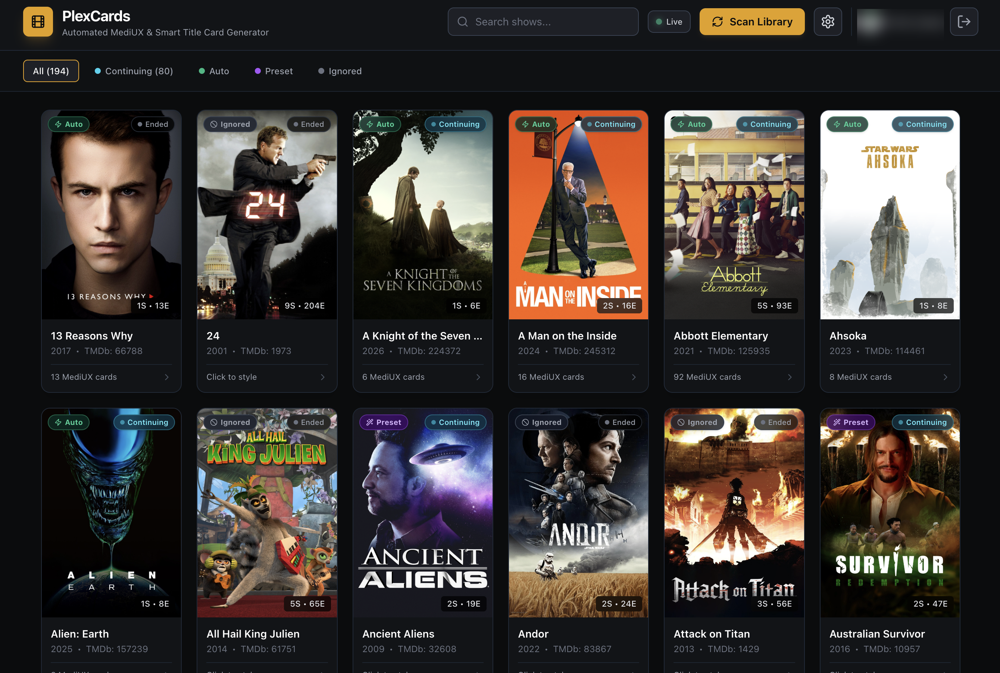
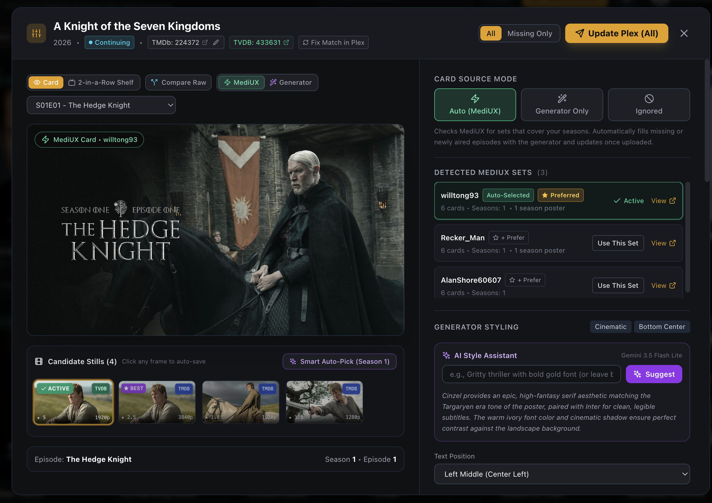
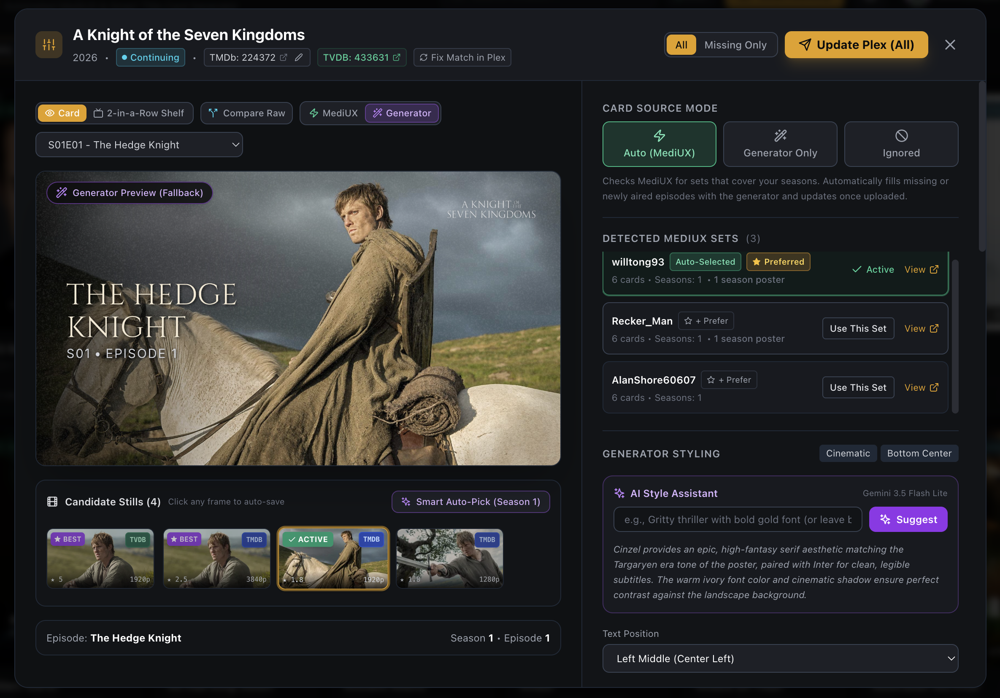
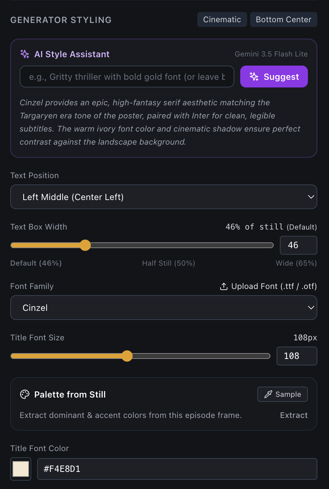
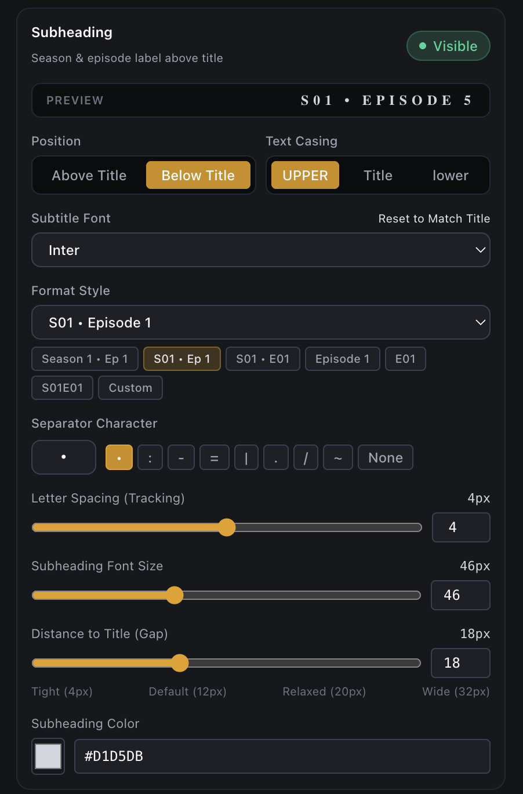
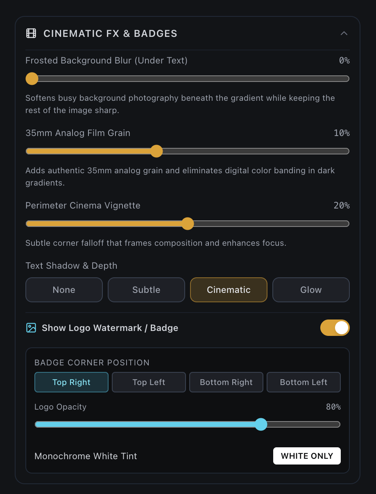
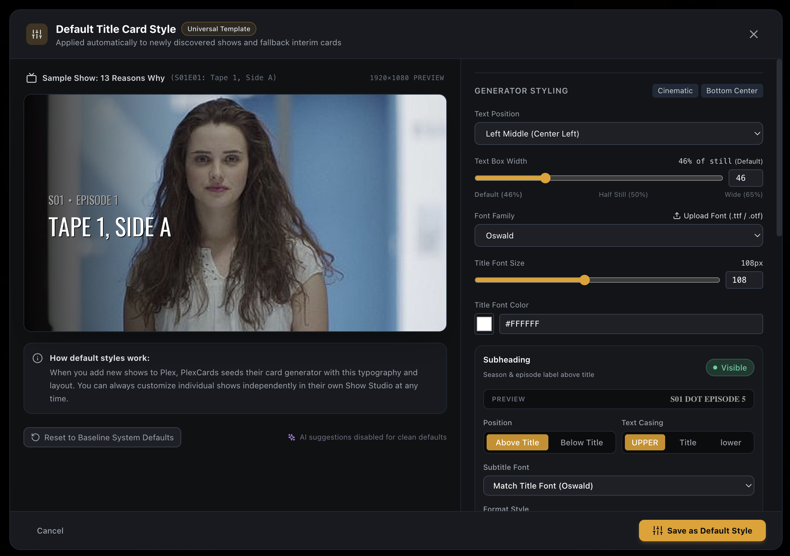
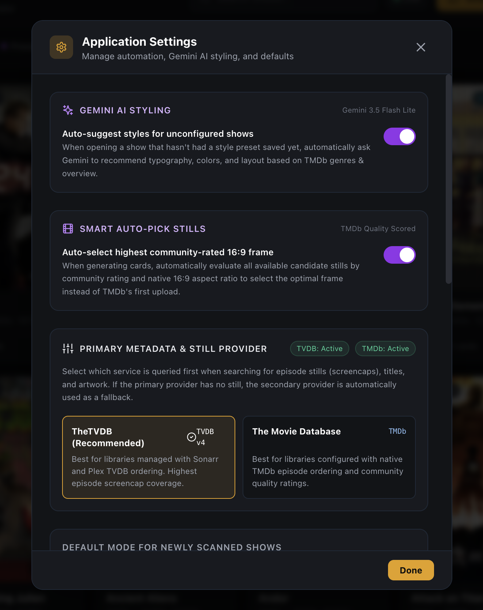

PlexCards matches community MediUX title card sets to your TV shows. When a show or episode doesn't have MediUX artwork, it automatically generates clean title cards using TheTVDB & TMDb screencaps and your custom typography.

Connects to Plex via WebSocket. Detects newly added or scanned episodes immediately without polling delays.
Checks MediUX for artwork sets. Supports locking to preferred creators and translating TVDB GUIDs to TMDb.
For missing cards, pulls 1080p screencaps from TVDB/TMDb and renders typography cards using Pillow.
Uploads the artwork directly to the episode in Plex. Safe testing mode available to verify renders locally first.
Full support for TheTVDB v4 Project API keys and subscriber PINs. Prioritizes TheTVDB for libraries structured via Sonarr, and cascades to TMDb automatically. Respects TVDB broadcast statuses (Continuing vs Ended).
Need to adjust the font size, fix a typo, or pick a different still for just one episode? Click "Update This Card" in the studio to render and upload that single episode to Plex without re-running the entire show.
Browse all community-submitted stills from TheTVDB and TMDb with community ratings, resolution tags, and provider badges. Includes one-click Smart Auto-Pick for the highest-rated screencap per season.
Verify text legibility and alignment using the side-by-side TV shelf simulator (2 in a row). Drag the interactive split slider to compare the raw screencap against the rendered title card.
TEST_MODE=true by default. Renders test cards to cache/test_output/ without writing to your Plex server until you toggle "Live Upload" or set TEST_MODE=false.
Require users to log in using their official Plex account (ENABLE_AUTH=true). Restricts access to the server owner by default, with optional username whitelist via ALLOWED_USERS.
The main dashboard provides an overview of your entire Plex TV library. Each series card displays high-resolution poster artwork, release year, total seasons and episode counts, and a direct status badge showing whether the series is active (Continuing) or concluded (Ended).

When viewing a show in the Studio, PlexCards queries the MediUX community API using the show's TMDb and TheTVDB IDs. Available sets are listed on the right sidebar, showing creator usernames, total card counts, covered seasons, and bundled season posters.

When a show lacks MediUX artwork or you prefer a custom design, switch to the Generator tab. PlexCards downloads 1080p community screencaps and gives you fine-grained control over typography, placement, and framing.
If you supply an optional GEMINI_API_KEY, PlexCards features an AI styling assistant powered by Gemini 3.5 Flash Lite. Gemini evaluates the show's genres, plot overview, and aesthetic tone to recommend complementary font families, subtitle pairings, warm/cool color palettes, drop shadow intensity, and alignment (e.g. recommending Cinzel serif paired with Inter subtitles for high-fantasy titles).
* Note: Gemini AI styling is completely optional. If GEMINI_API_KEY is omitted in your .env file, the entire AI section is cleanly hidden from the UI without warnings, and all manual typography and presets operate identically.

Choose from bundled Google Fonts or upload custom .ttf / .otf files. Configure title font size, subtitle format (S01 • EPISODE 1, 1x01), casing, and 11 distinct alignment anchor positions.

Adjust gradient angle, width, and opacity to ensure title legibility over complex backgrounds. Layer frosted glass background blurs, subtle 35mm film grain, and edge vignettes.

Optionally overlay official transparent show logos pulled from TheTVDB or TMDb. Supports custom corner placement, opacity adjustment, and monochrome conversion.

Define the baseline typography template (font, layout, subtitle format, colors) that will be applied automatically whenever new TV series are discovered on your server.

Toggle automated AI suggestions, enable Smart Auto-Pick for candidate stills, and set your primary metadata provider priority (TheTVDB vs TMDb) with automatic secondary fallback.
| Variable | Required | Default | Description |
|---|---|---|---|
| PLEX_URL | Yes | http://localhost:32400 | URL of your Plex Media Server. |
| PLEX_TOKEN | Yes | — | Your Plex authentication token (X-Plex-Token). |
| PLEX_TV_LIBRARY | Yes | TV Shows | Exact name of your TV library section in Plex. |
| TMDB_API_KEY | Yes | — | Free TMDb v3 API key for episode metadata & stills. |
| TVDB_API_KEY | No | — | TheTVDB v4 Project API Key for TVDB ordering and stills. |
| TVDB_PIN | No | — | TheTVDB Subscriber PIN (for subscriber accounts). |
| DEFAULT_METADATA_PROVIDER | No | tvdb | Preferred provider for stills & show status (tvdb or tmdb). |
| GEMINI_API_KEY | No | — | Google Gemini API key for AI style suggestions (optional). |
| ENABLE_AUTH | No | false | Set to true to require Plex OAuth sign-in. |
| ALLOWED_USERS | No | — | Comma-separated Plex usernames/emails permitted to access. |
| TEST_MODE | No | true | Prevents uploading to Plex while testing layouts and fonts. |
| PORT | No | 8080 | Port the web dashboard and backend API listens on. |
PLEX_URL=http://192.168.1.50:32400
PLEX_TOKEN=your_plex_token
PLEX_TV_LIBRARY=TV Shows
TMDB_API_KEY=your_tmdb_api_key
TVDB_API_KEY=your_tvdb_v4_key
TVDB_PIN=your_subscriber_pin
DEFAULT_METADATA_PROVIDER=tvdb
ENABLE_AUTH=false
TEST_MODE=true
PORT=8080services:
plexcards:
image: ghcr.io/havok89/plexcards:latest
container_name: plexcards
restart: always
ports:
- "8080:8080"
environment:
- PLEX_URL=http://192.168.1.50:32400
- PLEX_TOKEN=your_plex_token
- PLEX_TV_LIBRARY=TV Shows
- TMDB_API_KEY=your_tmdb_api_key
- TVDB_API_KEY=your_tvdb_v4_key
- TVDB_PIN=your_subscriber_pin
- DEFAULT_METADATA_PROVIDER=tvdb
- TEST_MODE=true
volumes:
- ./data:/app/data
- ./cache:/app/cache
- ./custom_fonts:/app/custom_fontsdocker compose up -d
and open
http://localhost:8080
Pre-built multi-arch (amd64 / arm64) images are published to GHCR with each official GitHub release. You can use :latest or pin to a release version tag (e.g. :v0.8.0).